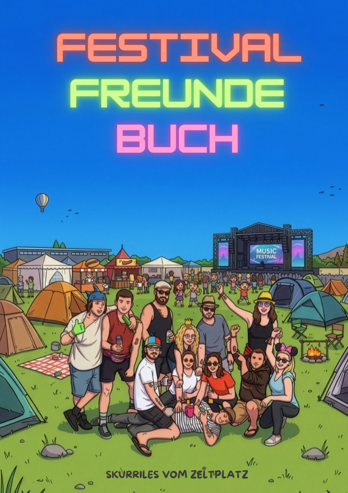
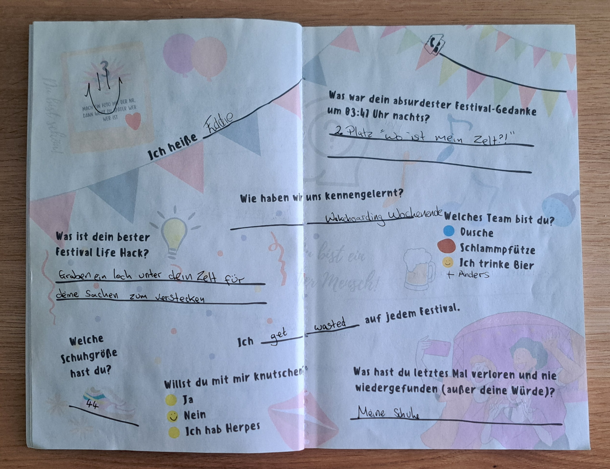

Du kennst das. Drei Tage Festival, gefühlt hundert neue beste Freunde, ein Handy-Akku der am zweiten Tag stirbt und Erinnerungen, die irgendwo zwischen Bierzelt und Dixi-Klo verschwimmen. Drei Wochen später scrollst du durch deine Kamerarolle und fragst dich: Wer war eigentlich die coole Socke mit der Ananas-Sonnenbrille?
Genau für dieses Problem gibt es Festival Freundebücher. Aber nicht jedes Freundebuch für Erwachsene ist automatisch ein gutes Festival Freundebuch. Wir haben uns das Marktumfeld angeschaut, verglichen was andere Bücher bieten und dir zusammengefasst, worauf es wirklich ankommt.
Warum ein normales Freundebuch beim Festival nicht reicht
Die meisten Freundebücher für Erwachsene sind für Geburtstage, Abschiede oder WG-Partys gemacht. Nett gemeint, aber am Zeltplatz komplett fehl am Platz. Sie fragen nach Lieblingsfarbe und Berufswunsch, während neben dir gerade jemand im Schlamm-Kostüm Karaoke singt. Ein echtes Festival Freundebuch braucht andere Fragen: ehrlicher, schräger, näher an dem was auf dem Campingplatz wirklich passiert.
Was ein gutes Festival Freundebuch ausmachen sollte
Bevor wir vergleichen, kurz die Kriterien, an denen sich ein Festival Freundebuch für Erwachsene messen lassen muss:
Abwechslung
Nicht 30 Mal die exakt gleiche Seite, sondern unterschiedliche Fragen, damit es beim fünften Eintrag nicht langweilig wird.
Ehrlicher Humor statt Kitsch
Festival-Realität statt Hallmark-Karte.
Format fürs Gepäck
Robust, kompakt, hält Bier und Regen aus.
Genug Platz
Für eine ganze Festival-Crew, nicht nur für drei Leute.
Der Marktvergleich: Festival Freundebücher im Check
Aktuell tummeln sich mehrere Freundebücher mit Festival-Fokus auf Amazon. Die bekanntesten im Überblick:

| Buch | Auffälligkeit |
|---|---|
| Mein Festival Freundebuch (Tina Tewes) | Klassisches Ein-Fragen-Layout |
| Mein Festival Freundebuch für Erwachsene (Freunde der Bauchtasche) | Solide, aber Standard-Fragenset |
| Festival Freundebuch Rock & Metal Edition (Dark Sun) | Nischen-Fokus auf Rock/Metal-Festivals |
| Das ultimative Festival-Freundebuch (Michaela Landwehr) | Wenig Differenzierung |
| Festivals, Freunde, Feierei (Stella Sommerfeld) | Kleineres Format |
| Festival Freunde Buch (Paul Aner) | 5 unterschiedliche Fragesets im Wechsel |
Der große gemeinsame Nenner der meisten Bücher am Markt: ein einziges Fragenset, das sich über alle Seiten wiederholt. Klingt erstmal egal, ist es aber nicht, wenn du das Buch bei 30+ Leuten rumgehen lässt. Spätestens beim zehnten Eintrag beantwortet jeder dieselben drei Fragen und die Antworten werden vorhersehbar.
Was das Festival Freunde Buch anders macht
Das Festival Freunde Buch von Paul Aner läuft nicht mit einem, sondern mit 5 komplett unterschiedlichen Fragesets im Wechsel. Über 35 Doppelseiten wiederholt sich kein Set öfter als nötig, jede Doppelseite hat oben ein nummeriertes Polaroid-Feld, damit du später noch weißt, wer wer war (Foto machen, Nummer merken, Blackout-Problem gelöst).

Ein paar Kostproben aus dem echten Buch, damit du siehst wovon wir reden:
„Willst du mit mir knutschen?" ⬤ Ja ⬤ Nein ⬤ Ich hab Herpes
„Was war dein absurdester Festival-Gedanke um 03:47 Uhr nachts?"
„Welches Team bist du?" ⬤ Dusche ⬤ Schlammpfütze ⬤ Ich trinke Bier
„Was hast du letztes Mal verloren und nie wiedergefunden (außer deine Würde)?"
Ein wiederkehrendes Gimmick zieht sich durch fast jede "Team"-Frage: eine Antwortoption ist immer "Ich trinke Bier". Kleiner Insider, der nach dem dritten Mal ausfüllen zum running Gag der ganzen Crew wird.
Diese vier Fragen sind nur ein Bruchteil dessen was auf 35 Seiten und 5 verschiedenen Fragesets wartet. Den Rest gibt's im Buch selbst, nicht hier im Artikel, sonst bräuchtest du es ja gar nicht mehr kaufen.
Für wen ist das Festival Freunde Buch das richtige Geschenk
- Für dich selbst, wenn du dieses Jahr endlich Namen und Gesichter zusammenbekommen willst
- Für die beste Freundin oder den besten Kumpel vor der Festival-Saison
- Als Mitbringsel für die ganze Camping-Crew, damit alle reihum eintragen
- Als Geschenk für Musikliebhaber, die sowieso schon alles an Merch haben
Was andere Käuferinnen sagen:
Fazit
Ein Festival Freundebuch für Erwachsene lohnt sich nur, wenn es auch wirklich fürs Festival gemacht ist und nicht nur umetikettiert wurde. Der entscheidende Unterschied liegt selten im Preis, sondern darin ob dich das Buch beim zwanzigsten Eintrag noch zum Grinsen bringt oder nicht. Mit 5 Fragesets statt einem hat das Festival Freunde Buch da aktuell die Nase vorn.